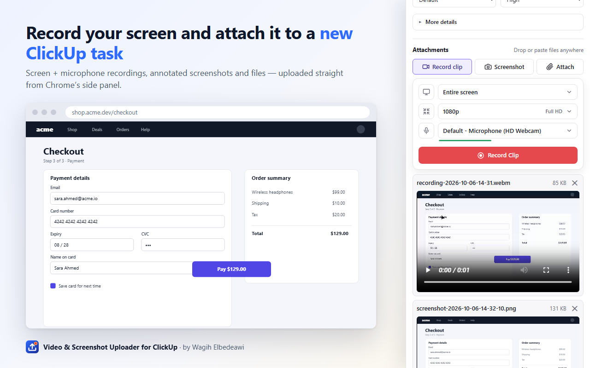
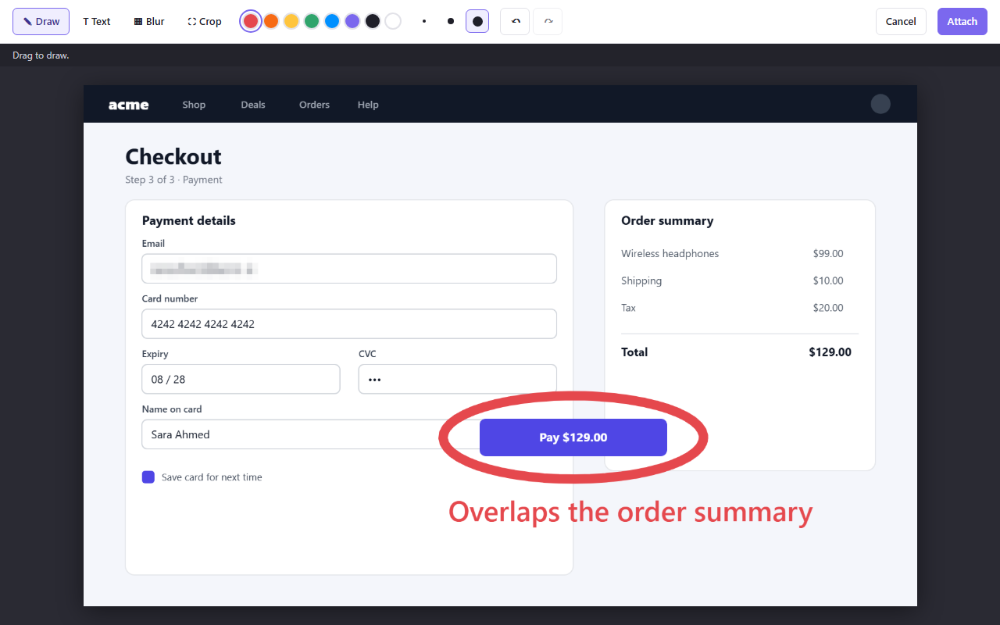
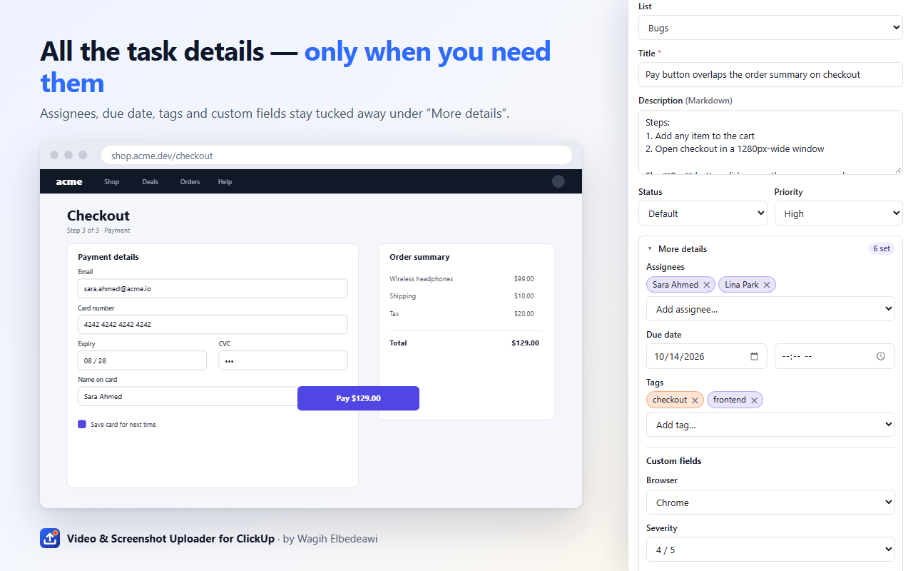
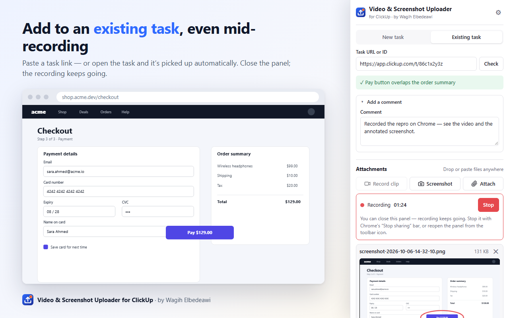

Bug reports, with the video attached.
Record your screen or annotate a screenshot, then file it to a ClickUp task, new or existing, without leaving the page. Free and open source. It talks to ClickUp and nothing else.
Also works in Edge, Brave, Opera and Vivaldi. Not in the stores yet? Get the latest release on GitHub.

Three steps, one panel
Everything happens in the browser's side panel, next to the page you're looking at.
-
Capture
Record a clip of your screen, a window or a tab. Or take a screenshot of the visible tab, a dragged-out area or the whole screen, then draw, write, blur and crop before anyone sees it.

-
Describe
Pick the list, give the task a title and a Markdown description, set status and priority. Open More details when you need assignees, a due date, tags or custom fields.

-
Send
Create the task and upload in one click. Or add to an existing task: open it in ClickUp and the panel picks it up, or paste a link. Leave a comment while you're at it.

Everything it does
Built for people who file bugs and feedback all day: QA, support, designers, product folks.
Screen recording
- Your entire screen, a window or a tab, at 720p up to 4K or native size, with any microphone and system audio. Clips are written to disk as they record, so long ones don't fill memory. In Chrome you can close the panel while it records.
Screenshots you can edit
- Visible tab, a selected area or the whole screen. Draw, add text, blur sensitive details and crop, with undo, redo and keyboard shortcuts. Edits are applied to the original pixels, so the export is full resolution.
Tasks the way your team files them
- Workspace, Space, Folder and List, each remembered. Title, Markdown description, status and priority. Assignees, due date with a time, tags and custom fields, with required ones checked before you submit.
Add to an existing task
- Open a task in ClickUp and the panel detects it. Or paste a task link, an ID or a custom ID like DEV-123. Attach files and post a comment, or just the comment.
Any other files
- Pick, drag or paste files into the panel. Uploads retry on failure and wait out ClickUp's rate limits, and a created task is never duplicated on retry.
Private by design
- Your own personal API token, stored in your browser. The extension talks to api.clickup.com and nowhere else: no servers of ours, no analytics, no tracking. The code is open, under the MIT license.
Chrome and Firefox
The same panel in both. A few things differ because the browsers do.
| Chrome, Edge, Brave, Opera, Vivaldi | Firefox | |
|---|---|---|
| Where the panel lives | Side panel | Sidebar |
| Record a single tab | Yes | Screens and windows only |
| System audio in recordings | Yes, tick "Share audio" in the picker | Microphone only |
| Recording while the panel is closed | Yes, a REC badge shows it's running | Keep the sidebar open and stop from it. If it's closed, what was recorded is kept |
| Minimum version | Chrome 123 | Firefox 128 |
What it does with your data
- Everything stays in your browser until you press Create or Upload.
- Data goes to one place: ClickUp's API, with your own token.
- The developer runs no servers for this extension and receives none of your data.
- No analytics or tracking in the extension. Nothing is sold.
The full privacy policy lists every piece of data the extension touches and why.
This website, as opposed to the extension, counts visits with Cloudflare Web Analytics, which sets no cookies and stores no personal data.
Questions
Is it free?
Yes. The extension is free and open source under the MIT license. If it saves you time, there's a coffee button, but nothing is locked behind it.
Does it work with ClickUp's free plan?
Yes. It uses your personal API token, which every ClickUp plan provides under Settings, then Apps. Attachments are limited by ClickUp's own per-file limit.
Why does it ask for access to all websites?
So you can screenshot whatever page you're on, draw an area to capture on it, and have the panel notice when the current tab is a ClickUp task. Pages are only read when you click a capture button; nothing is collected in the background.
Where do recordings go before I upload them?
They're kept in your browser's storage, on your computer, until you upload or remove them. Unused screenshot drafts are deleted after 24 hours. Uninstalling the extension removes everything it stored.
Is this made by ClickUp?
No. It's an independent project by Wagih Elbedeawi, not affiliated with, endorsed by or sponsored by ClickUp. "ClickUp" is a trademark of its owner, used here only to describe compatibility.